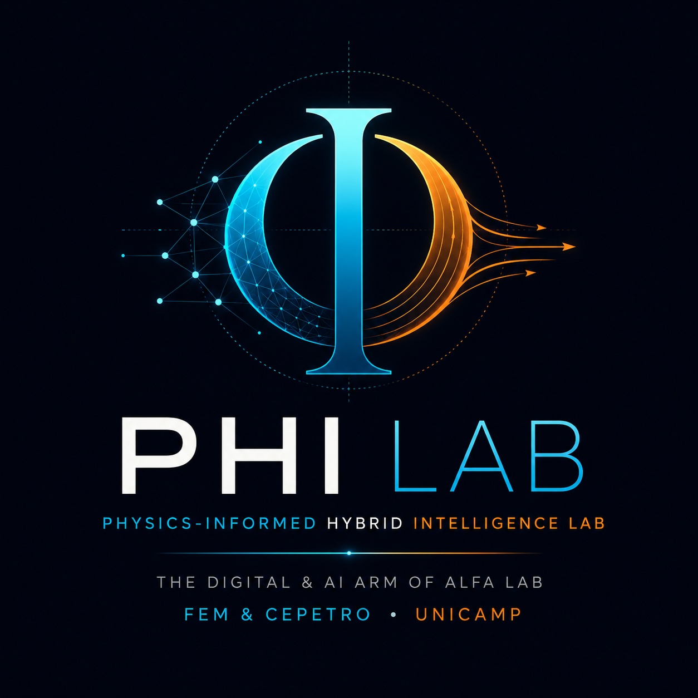
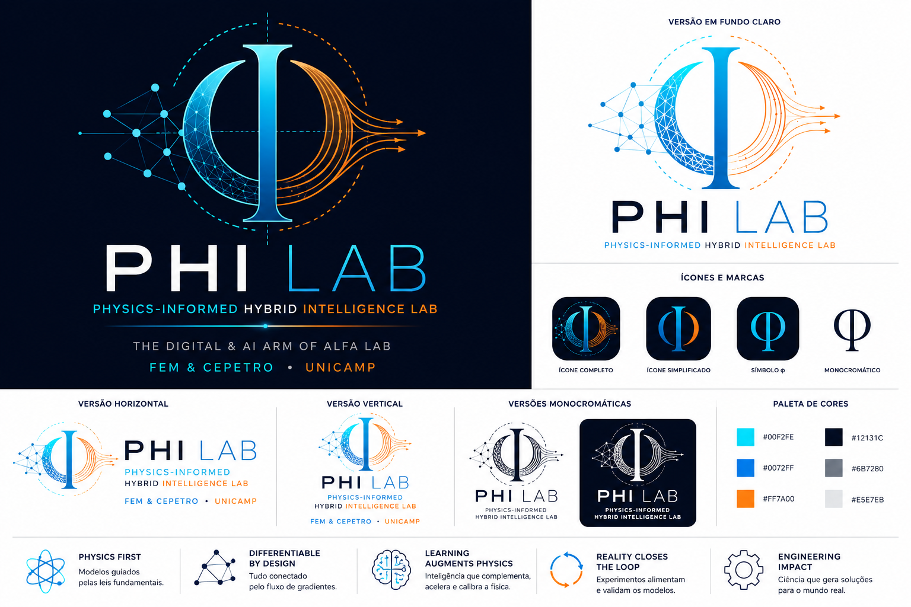
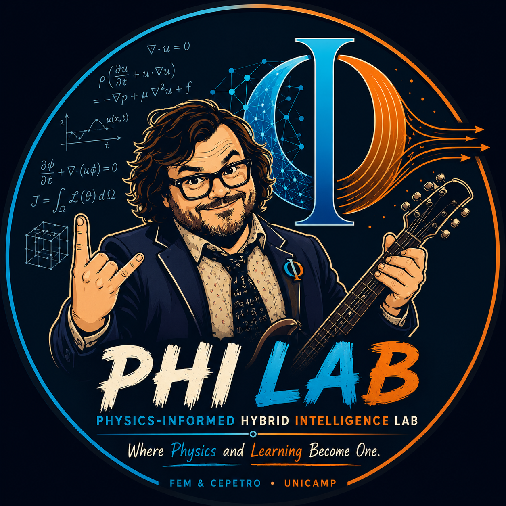

Física como Núcleo
A física permanece o núcleo soberano do conhecimento, tornando-se totalmente diferenciável.

The Laboratory for Physics-informed Hybrid Intelligence
Faculdade de Engenharia Mecânica (FEM) — CEPETRO / UNICAMP
"Engineering Scientific Intelligence — Where Physics and Learning Become One"
O PHI Lab é a unidade de pesquisa em Inteligência Computacional e Modelagem Avançada associada ao ALFA Lab (Artificial Lift and Flow Assurance), estabelecendo um novo paradigma para a Engenharia Computacional onde modelos físicos diferenciáveis, scientific machine learning, modelos de mundo e experimentação evoluem conjuntamente.
"Engineering has always relied on mathematical models. Artificial Intelligence has shown that machines can learn from data. The next revolution is neither physics nor AI. It is their integration. At PHI Lab, we develop differentiable computational models where physical laws, scientific computing and machine learning evolve together. We build computational systems capable of understanding the physical world. We call this Physics-informed Hybrid Intelligence."
Physics-informed Hybrid Intelligence representa mais do que uma sigla: é uma filosofia científica.
O símbolo φ (phi) possui profundo significado em matemática, física e mecânica dos fluidos, representando fração volumétrica (void fraction), porosidade, variáveis de fase, campos escalares, funções potencial, métodos level set e diferenciação contínua. Remete também à elegância da proporção áurea, simbolizando o equilíbrio entre conhecimento físico, aprendizado e computação.
A física permanece o núcleo soberano do conhecimento, tornando-se totalmente diferenciável.
Simulação, aprendizado e otimização integram um único grafo computacional onde experimentos alimentam continuamente os modelos.
Desenvolver modelos computacionais diferenciáveis que integrem leis físicas, aprendizado científico de máquina, modelos de mundo e dados experimentais para acelerar a descoberta científica e transformar a engenharia.
Estabelecer Physics-informed Hybrid Intelligence como um novo paradigma internacional para Engenharia Computacional, tornando o PHI Lab uma referência mundial em modelagem científica, software de alto desempenho e inteligência computacional para sistemas físicos.
CFD, Escoamentos Multifásicos, Solvers Diferenciáveis e Simulação Científica.
Scientific Machine Learning, Physics-informed Learning, Neural Operators e Operator Learning.
World Models, Foundation Models para Ciência, Modelagem Latente e Generative Physics.
Digital Twins, Assimilação de Dados, Sensor Fusion, Controle e Otimização.
HPC, GPU Computing, Programação Diferenciável e Software Científico Aberto.
Garantia de Escoamento (Flow Assurance), Elevação Artificial (BCSS), Geoenergia e Sistemas Multifásicos.

Símbolo do PHI integrando redes neurais (Scientific ML), fluxo de gradientes e linhas de corrente da mecânica dos fluidos.

"Where Physics and Learning Become One" — Unindo rigor científico, energia e criatividade na resolução de problemas complexos.